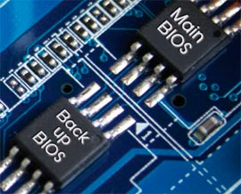

Una tarjeta gráfica es un componente en una computadora que se encarga de procesar y renderizar las imágenes, gráficos y vídeos para ser mostrados en la pantalla. Las tarjetas gráficas para computadoras portátiles son mucho más compactas que las de una computadora de mesa. Su función principal es mejorar el rendimiento visual especialmente en los videojuegos, edición de vídeo y diseño gráfico.
Existen dos tipos de tarjetas gráficas, las integradas y las dedicadas. Las tarjetas gráficas integradas están incorporadas en el procesador o en la placa madre y utilizan una parte de la memoria RAM del sistema para poder realizar sus tareas, esto puede limitar su rendimiento en aplicaciones gráficas exigentes. Y las tarjetas gráficas dedicadas son un componente independiente con su propia memoria llamada "VRAM" (no extrae su memoria de la RAM del sistema) al ser independientes, tienen capacidades de procesamiento y rendimiento mucho más avanzadas que las tarjetas gráficas integradas, son ideales para las aplicaciones y juegos de altos requisitos.
La tarjeta gráfica no funciona de manera aislada, su rendimiento está estrechamente relacionado con otros componentes del sistema, especialmente el procesador y la memoria RAM. Si la tarjeta gráfica es muy potente pero el procesador es débil, la CPU puede convertirse en un cuello de botella, limitando el rendimiento de la tarjeta gráfica en tareas intensivas. De igual manera, la cantidad y velocidad de la memoria RAM también influyen en el rendimiento general, una RAM insuficiente o lenta puede resultar en tiempos de carga más largos y un rendimiento ineficiente, incluso si la tarjeta gráfica es de gama alta. Por lo tanto, es esencial encontrar un equilibrio entre la tarjeta gráfica, el procesador y la memoria RAM para asegurar un rendimiento óptimo, evitando que cualquier componente limite las capacidades de los demás.
La tarjeta gráfica afecta la resolución a la que puedes jugar o trabajar. Resoluciones más altas (como 1440p o 4K) requieren más potencia gráfica. Una buena tarjeta gráfica dedicada es esencial para lograr un rendimiento fluido en estas resoluciones.
Al momento de elegir una tarjeta gráfica, hay que asegurarse de que sea compatible con la computadora. Primero, se revisa que la placa base tenga una ranura PCIe x16 para poder conectarla. Para esto, se puede abrir la carcasa y mirar la placa base. Luego hay que Verificar que la fuente de alimentación tenga suficiente potencia y los conectores necesarios (6 u 8 pines). También, asegurarse de que el procesador no sea muy antiguo, ya que esto puede limitar el rendimiento de la tarjeta. También es importante revisar que haya controladores disponibles para el sistema operativo que se está utilizando. A veces puede ser necesario actualizar la BIOS para un funcionamiento adecuado.
La BIOS (Basic Input/Output System) es un software que se encuentra en la placa base de la computadora, responsable de iniciar el sistema al encender el equipo. Realiza pruebas de autodiagnóstico para verificar que todos los componentes funcionen correctamente y permite configurar parámetros del hardware, como el orden de arranque de los dispositivos.
Mantener los controladores actualizados es crucial para asegurar un rendimiento óptimo y la compatibilidad con nuevos juegos y aplicaciones.
Tarjetas Gráficas Dedicadas: NVIDIA GeForce: Amplia gama de modelos desde la serie GTX para juegos ligeros hasta la serie RTX para juegos de alta gama y tareas de inteligencia artificial. AMD Radeon: Series RX que ofrecen rendimiento para juegos, edición de video y gráficos 3D, competidor directo de NVIDIA. NVIDIA Quadro: Tarjetas gráficas profesionales diseñadas para aplicaciones de diseño, modelado y renderizado. AMD Radeon Pro: Gráficas profesionales optimizadas para trabajo en estaciones de trabajo y aplicaciones de diseño gráfico.
Tarjetas Gráficas Integradas: Intel HD Graphics: Integradas en la mayoría de los procesadores Intel, adecuadas para tareas diarias y algunos juegos ligeros. Intel Iris Graphics: Versión mejorada de las gráficas integradas de Intel, mejor rendimiento en juegos y aplicaciones gráficas. AMD Radeon Graphics: Integradas en procesadores AMD Ryzen, ofrecen buen rendimiento para tareas cotidianas y juegos ligeros. APU de AMD: Las Unidades de Procesamiento Acelerado combinan CPU y GPU en un solo chip, proporcionando gráficos decentes sin necesidad de una tarjeta dedicada.
Volver